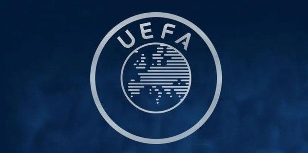

İspanya 2’nci Ligi’nde Real Madrid’in efsane futbolcularından Guti Hernandez’in teknik direktörlüğünü yaptığı Almeria fırtınası esiyor. Guti, takımı ligin zirvesine çıkarmayı başardı.
Makaleyi oku
Makaleyi oku Güney Kıbrıs Rum tarafında birinci ligde görev yapan hakem Andreas Konstantinos'un aracına bomba konulması üzerine UEFA harekete geçti.
Güney Kıbrıs Rum tarafında birinci ligde görev yapan hakem Andreas Konstantinos'un aracına bomba konulması üzerine UEFA harekete geçti.Türk takımları, 2018 finans yılı gişe hasılatında yüzde 52'lik artışla zirvede yer aldı.
Makaleyi oku